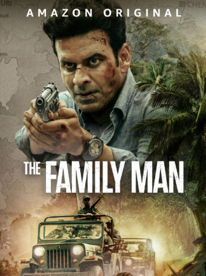

The Family Man (2019 - Present)
• Genre : Action | Comedy | Drama | Thriller
• Languages : Hindi | Tamil | Telugu
• Creator : Raj & DK
• ⭐ IMDb : 8.7
• Seasons : 2
• Episodes : 19
• Status : Ongoing
• Release Date : 20 September 2019
• About : Srikant Tiwari appears to be an ordinary middle-class man balancing family responsibilities and office work. In reality, he is a senior intelligence officer working for a secret branch of the National Investigation Agency. As he protects the nation from terrorist threats, he struggles to keep his dangerous double life hidden from his family.
STREAMING ON